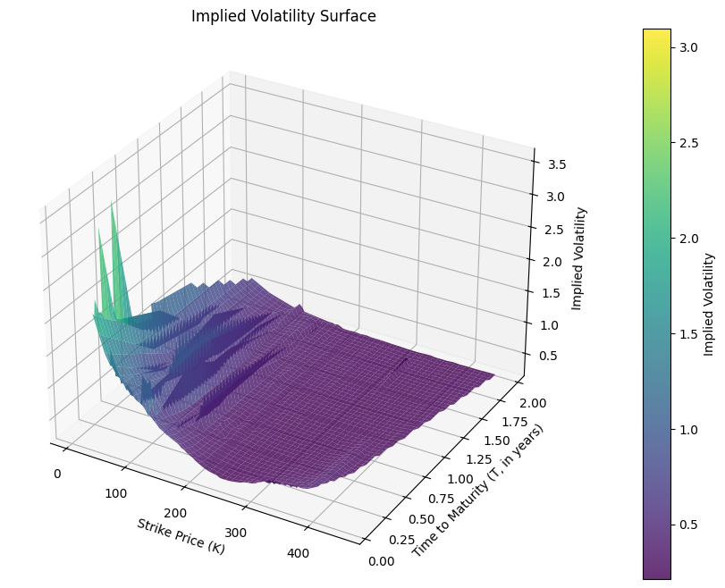
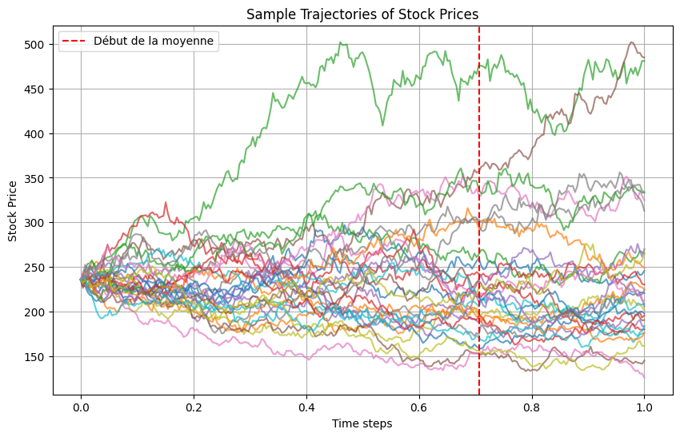
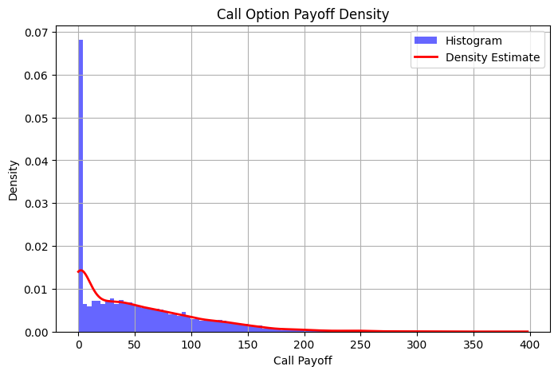
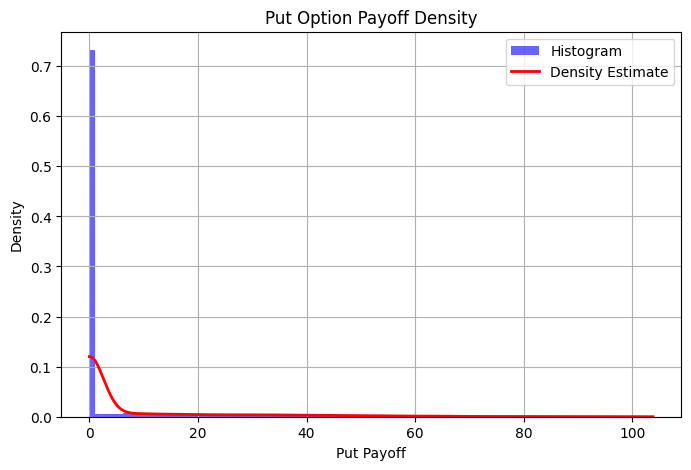
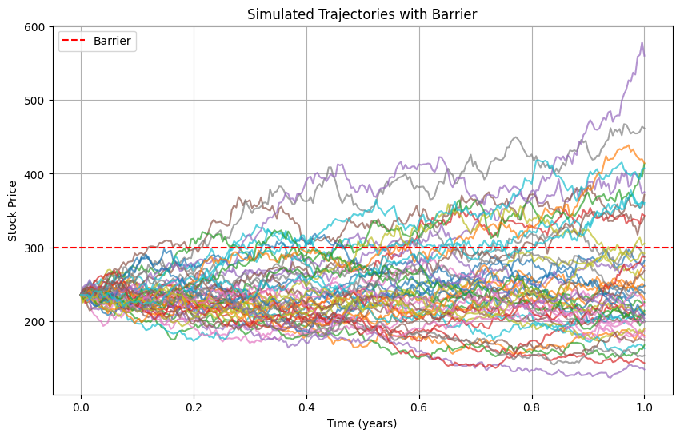

Nous allons initialiser la classe OptionsData pour le ticker Apple (AAPL).
Afficher le code
# Initialisation de la classe avec le ticker AMZNoptions_data = OptionsData("AAPL")options_data.load_data()options_data.process_data()stock_price = options_data.get_stock_price()print(f"Prix actuel de l'action AAPL : ${stock_price:.2f}")# Afficher la surface de volatilité impliciteoptions_data.implied_volatility_plot()
Data loaded successfully!
d:\deb\ENSAI\cours3A\11. ASSET MANAGEMENT\LAB\Script\Options\blackScholes.py:21: RuntimeWarning: invalid value encountered in sqrt
d1 = (np.log(stock / strike) + (interest_rate + 0.5 * sigma**2) * maturity) / (sigma * np.sqrt(maturity))
d:\deb\ENSAI\cours3A\11. ASSET MANAGEMENT\LAB\Script\Options\blackScholes.py:22: RuntimeWarning: invalid value encountered in sqrt
d2 = d1 - sigma * np.sqrt(maturity)
d:\deb\ENSAI\cours3A\11. ASSET MANAGEMENT\LAB\Script\Options\optionsdata.py:96: SettingWithCopyWarning:
A value is trying to be set on a copy of a slice from a DataFrame.
Try using .loc[row_indexer,col_indexer] = value instead
See the caveats in the documentation: https://pandas.pydata.org/pandas-docs/stable/user_guide/indexing.html#returning-a-view-versus-a-copy
call_data["implied_volatility"] = call_data.apply(
d:\deb\ENSAI\cours3A\11. ASSET MANAGEMENT\LAB\Script\Options\blackScholes.py:43: RuntimeWarning: invalid value encountered in sqrt
d1 = (np.log(stock / strike) + (interest_rate + 0.5 * sigma**2) * maturity) / (sigma * np.sqrt(maturity))
d:\deb\ENSAI\cours3A\11. ASSET MANAGEMENT\LAB\Script\Options\blackScholes.py:44: RuntimeWarning: invalid value encountered in sqrt
d2 = d1 - sigma * np.sqrt(maturity)
d:\deb\ENSAI\cours3A\11. ASSET MANAGEMENT\LAB\Script\Options\optionsdata.py:108: SettingWithCopyWarning:
A value is trying to be set on a copy of a slice from a DataFrame.
Try using .loc[row_indexer,col_indexer] = value instead
See the caveats in the documentation: https://pandas.pydata.org/pandas-docs/stable/user_guide/indexing.html#returning-a-view-versus-a-copy
put_data["implied_volatility"] = put_data.apply(
Prix actuel de l'action AAPL : $236.00

Options européennes
Nous pouvons maintenant pricer une option, avec des valeurs de K (le strike) et de T (la maturité) que l’utilisateur peut modifier : Dans un premier temps, nous récupérons la volatilité implicite à l’aide de K et T. Nous pouvons ensuite pricer les options européennes (un call ici)
Nous allons à présent calculer les grecques, ainsi que les afficher.
Afficher le code
# Example of usageif__name__=="__main__":# Define option parameters K =200 T =1.5 sigma = options_data.sigma_sim(T, K) # Interpolating implied vol interest_rate =0.042# Create the plotter instance plotter = OptionGreekPlotter(K, T, stock_price, sigma, interest_rate)# Functions for each Greekdef delta(option):return option.delta()def gamma(option):return option.gamma()def theta(option):return option.theta()def vega(option):return option.vega()def rho(option):return option.rho()# Plot Delta vs Strikes strikes = np.linspace(10, 350, 1000) plotter.plot_greek(delta, strikes, "Strike", "Delta", "Delta for Call and Put Options")# Plot Gamma vs Strikes plotter.plot_greek(gamma, strikes, "Strike", "Gamma", "Gamma for Call and Put Options")# Plot Theta vs Maturities maturities = np.linspace(0.1, 5, 100) plotter.plot_greek(theta, maturities, "Maturity (T)", "Theta", "Theta for Call and Put Options")# Plot Vega vs Strikes plotter.plot_greek(vega, strikes, "Strike", "Vega", "Vega for Call and Put Options")# Plot Rho vs Strikes plotter.plot_greek(rho, strikes, "Strike", "Rho", "Rho for Call and Put Options")
Unable to display output for mime type(s): application/vnd.plotly.v1+json
Unable to display output for mime type(s): application/vnd.plotly.v1+json
Unable to display output for mime type(s): application/vnd.plotly.v1+json
Unable to display output for mime type(s): application/vnd.plotly.v1+json
Unable to display output for mime type(s): application/vnd.plotly.v1+json
Options asiatiques
Nous allons à présent étudier les options asiatiques. Pour une option asiatique, le payoff dépend de la moyenne du prix de l’actif sous-jacent sur une période donnée, plutôt que du prix à la maturité (option classique).
On l’utilise pour plusieurs raisons :
Réduction de la volatilité :
Les options asiatiques sont moins sensibles à la volatilité extrême ou aux pics de prix inhabituels à un moment donné. En utilisant une moyenne des prix, elles “lissent” les fluctuations du sous-jacent.
Protection contre les manipulations de prix :
Pour certaines options classiques, le prix à la maturité peut être manipulé sur des marchés peu liquides. En utilisant une moyenne, l’option asiatique réduit ce risque. * Coût généralement plus faible :
Les options asiatiques sont souvent moins chères que les options classiques, car elles réduisent les risques associés aux variations extrêmes de prix. Utilité pour les entreprises et les matières premières :
Très utilisées pour les matières premières ou les devises, où les prix peuvent fluctuer considérablement au cours du temps. Par exemple, une entreprise peut utiliser une option asiatique pour se protéger contre une hausse moyenne du prix du pétrole pendant une période donnée.
Dans le code suivant, nous pouvons également définir le strike, la maturité ainsi que la période sur laquelle nous voulons faire la moyenne.
Afficher le code
# Define option parametersK =200# prix du strikeT =1# Maturité (en année)sigma = options_data.sigma_sim(T, K)interest_rate =0.042#taux d'intérêt sans risque# Simulation parametersn_simulations =10000n_steps =252averaging_period =0.3asian_option = AsianOption()# nous priçons le call et le put asiatiquecall_price, put_price = asian_option.price_asian_option( initial_price=stock_price, strike=K, maturity=T, interest_rate=interest_rate, volatility=sigma, n_simulations=n_simulations, n_steps=n_steps, averaging_period=averaging_period, show_trajectories=30)# Output the resultsprint(f"Asian Call Price: {call_price:.4f}")print(f"Asian Put Price: {put_price:.4f}")
Averaging start time: 0.7063 (en années)

Asian Call Price: 49.2640
Asian Put Price: 6.3408
Nous pouvons également analyser la probabilité que le call soit nul; de même pour le put. Nous affichons également les densités des payoff des call ainsi que des put.
Afficher le code
# Calculate and display probabilities and densitiesasian_option.prob_call_zero_and_density()asian_option.prob_put_zero_and_density()
Probability that Call Payoff is 0: 0.2456

Probability that Put Payoff is 0: 0.7544

Options “barrière”
Les avantages des options barrières sont multiples :
Réduction du coût :
Ces options sont moins chères que les options classiques car elles peuvent être désactivées. Idéal pour les investisseurs qui souhaitent une couverture moins coûteuse mais sont prêts à accepter les conditions associées. * Adaptées à certaines stratégies :
Si l’on pense que le prix du sous-jacent va rester dans une certaine fourchette, les options barrières permettent de profiter de cette conviction à moindre coût.
Gestion du risque :
Les barrières permettent de réduire les pertes potentielles en excluant certains scénarios extrêmes.
Dans le code suivant, l’utilisateur peut choisir le type de barrière souhaité (parmi “up-and-out”, “up-and-in”, “down-and-out”, “down-and-in”) ainsi que le choix du type d’option à pricer (call ou put).
Afficher le code
K =200# StrikeT =1# Maturité en annéesr =0.042# Taux sans risquesigma = options_data.sigma_sim(T, K)n_simulations =10000n_steps =250barrier =300# Niveau de la barrièreoption_type ='call'# type d'option choisiebarrier_type ='up-and-out'# type de barrièreoption = BarrierOption()# Afficher les trajectoiresoption.plot_trajectories(stock_price, K, T, r, sigma, n_simulations, n_steps, barrier, option_type, barrier_type)# Calculer le prix de l'optionoption_price = option.price_barrier_option(stock_price, K, T, r, sigma, n_simulations, n_steps, barrier, option_type, barrier_type)print(f"Prix de l'option : {option_price:.4f}")

Prix de l'option : 12.3810
Nous pouvons également nous intéresser à la densité de probabilité du payoff de l’option choisie, avec le type de barrière choisie. Par ailleurs, nous avons calculé la probabilité que l’option choisie soit nulle, ainsi que la cause. Il y en a deux : à cause de la barrière (l’option n’est pas réalisée car le maximum sur une trajectoire a dépassé la barrière dans le cas d’un “up and out” par exemple); dû au fait que le prix du sous-jacent est inférieur au strike (pour un call), supérieur pour un put.
Afficher le code
# Afficher la densité et les probabilitésoption.plot_density_and_probabilities(stock_price, K, T, r, sigma, n_simulations, n_steps, barrier, option_type, barrier_type)
Probability that the call option is worthless: 0.6400
- Due to the barrier: 0.3703
- Due to the underlying price < strike: 0.2697